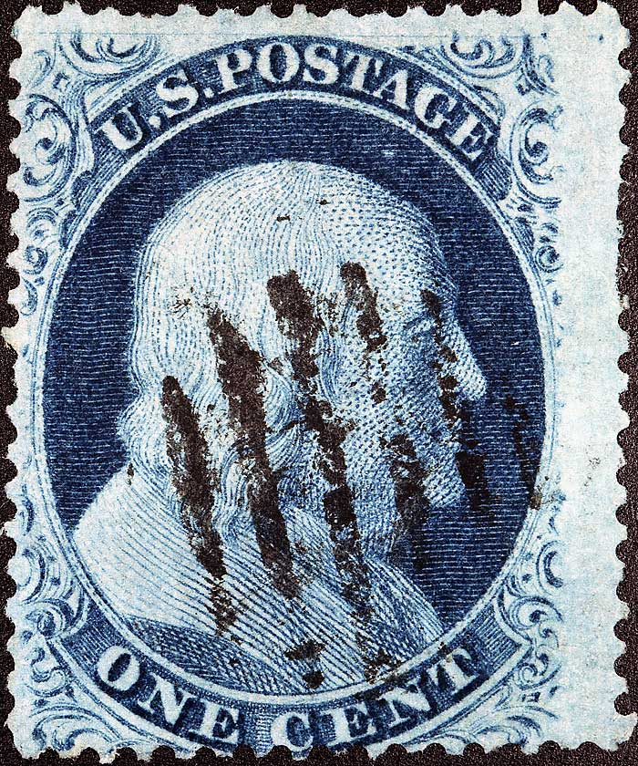
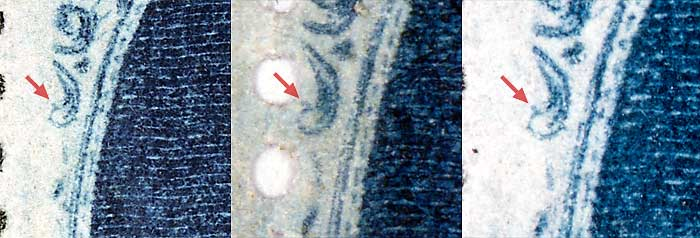
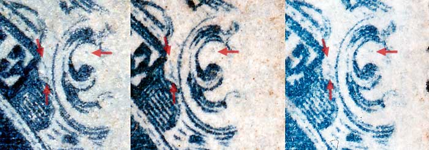
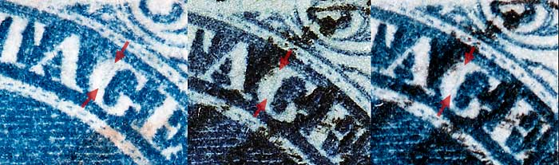
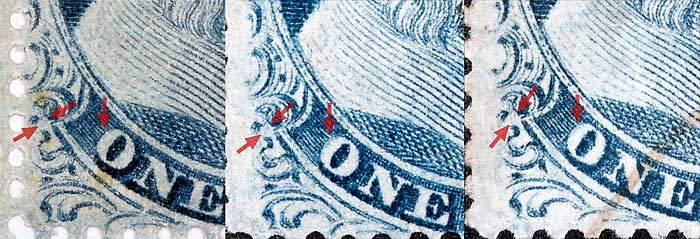
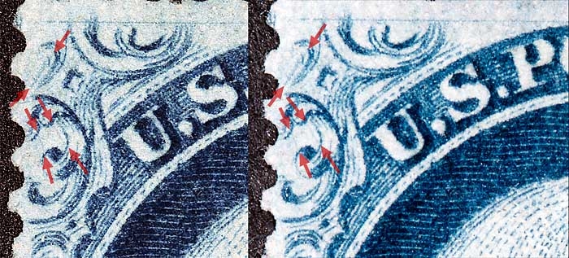
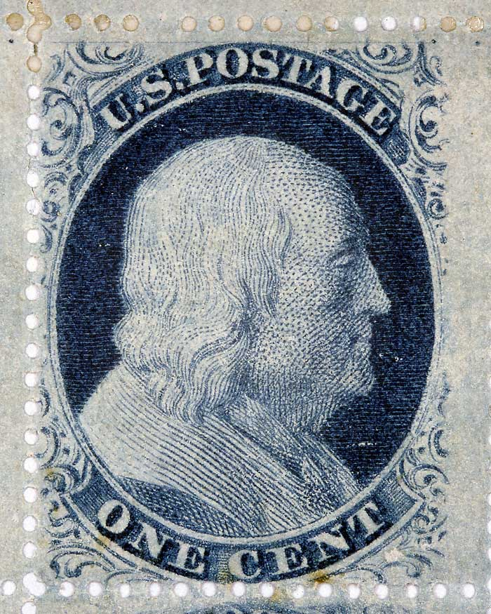

1¢ Franklin Issue of 1857-1861, PLATE 10 Position 6R10, (Scott #24) |
| Scott #24 Blue, Type V, Relief A Issued only Perforate. This position is not illustrated in the Neinken plating diagrams and is noted as not having plating marks. The archivist disagrees with Neinkens' assumption given that almost every position from Plate 8, 9 and 10 has some identifing feature. The archive has many confirming examples, and careful inspection reveals many consistent plating marks, as can be seen below. Additional plating notes: |
|  |
| FIGURE 1. (Below) A dot of color on top of Ornament D confirmed here as consistent.
 |
| FIGURE 2. (Below) Small dot of color below and inside of Ornament L and a short left leaning crack or curl of color to the left and inside of Ornament L/M confirmed here as consistent.
 |
| FIGURE 3. (Below) A faint line of color inside of the G of POSTAGE confirmed here as consistent.
 |
| FIGURE 4. (Below) Two small dots of color inside Ornament H and a consistent blur of color inside the upper left edge of the O of ONE, confirmed here as consistent.
 |
| FIGURE 5. (Below) Faint lines of color inside the upper left ornaments. Weak or soft impressions make these features difficult to see.
 |
| FIGURE 6. (Below) Position 6R10 from the full pane. Careful examination of confirming examples will surely reveal other consistent plating marks.
 |
| DISCLAIMER and COPYRIGHT INFORMATION: Thanks for visiting this site. I hope you learn something new as we are making new discoveries all the time. You, the visitor, have my permission to link to my pages and to share the INFORMATION with others. The images themselves fall under the fair use guidelines established by the United States Congress and Copyright law. Basically contact us before using. I also ask in return that you send me an e-mail if I have made a mistake, or have made some other technical blunder that in my rush to put these pages up would cause the visitor confusion. Please also visit my other website at www.slingshotvenus.com. and support the live music arts. While your there, be sure to purchase our music. There are not many philatelic rock stars around and we need all the help we can get. :-) I can be reached at: nerdman@ix.netcom.com Updated 01.24.2010 |